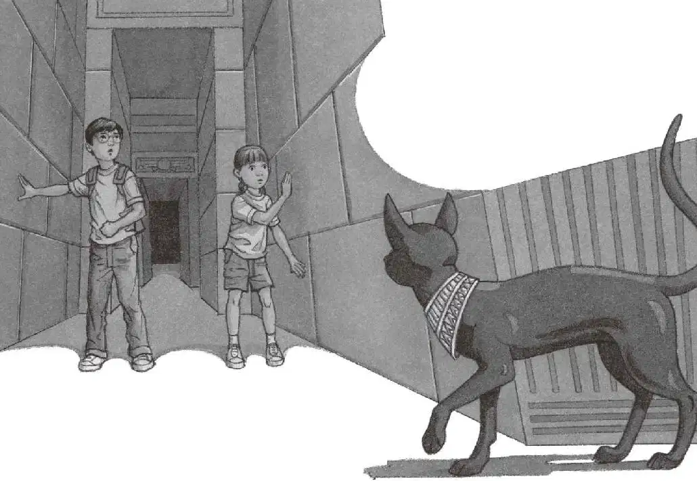
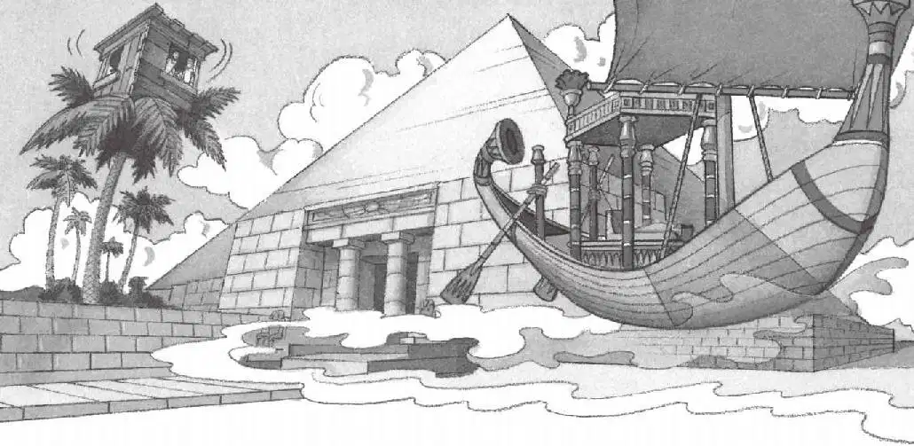

四下一片漆黑。
“出什么事了？”安妮问。
“不知道，真够诡异的。”杰克说，“我们必须尽快离开这儿，快去推那扇门。”
“好主意。”安妮用细小的声音说。
他们摸着黑走到楼梯顶部。
“别担心，不会有事的。”杰克努力让自己保持平静。
“那还用说？”安妮回应道。
他们把身体靠在那扇木门上，用力地往前顶。
门一动不动。
他们加大了力气。
门还是没有动弹。
杰克觉得呼吸变得越来越困难，他深深吸了口气。
“我们该怎么办呢？”安妮担忧地问道。
“稍微……稍微歇一会儿。”杰克喘着粗气说。他在黑暗中拼命睁大眼睛，心跳得像打鼓一样。
“也许我们应该顺着通道往前走，”安妮提议道，“说不定最后能找到……找到一个出口。”
杰克不太确定这么做对不对，但是他也没有别的选择了。
“好吧，我们走吧。”他说，“用手摸着墙壁。”
杰克摸着石墙，慢慢地顺着楼梯走下去。安妮跟在后面。
周围漆黑一片，什么都看不见。但杰克和安妮还是继续往前走着，一步一个台阶。
杰克绕过一个拐角，再绕过一个拐角，眼前又是一段楼梯。他爬上楼梯，安妮跟在后面。
这时，杰克碰到了一扇门，他用手推了推，没动。安妮也过来帮着一起推，但这扇门还是推不动。
莫非这还是刚才的那扇门？
杰克和安妮不再推了。没有用，他们被困住了。
安妮在黑暗中抓住杰克的手，用力地捏了捏。
他们并肩站在楼梯顶上，倾听周围的寂静。
“喵！”
“哦，天哪！”杰克悄声说。
“它回来了！”安妮说。
“喵。”
“快跟着它！”杰克喊道，“它要走远了。”
杰克和安妮跟着黑猫的叫声，走下黑乎乎的楼梯。

他们用手摸着墙，在黑暗中跌跌撞撞地走着。
“喵。”
杰克和安妮一路跟着黑猫，在弯弯曲曲的通道里绕来绕去。
一个拐角，又一个拐角，再一个拐角……
终于，他们看到了通道尽头的亮光。杰克和安妮赶紧冲向前去，跑到了外面灿烂的阳光里。

“太好了！”安妮兴奋地喊道。
可是杰克还在暗自琢磨。“安妮，”他说，“我们是怎么从那条假通道里出来的？”
“跟着那只猫。”安妮说。
“可是猫是怎么做到的呢？”杰克不解地问。
“魔法。”安妮说。
杰克皱起了眉头说：“可是……”
“看！”安妮指着那只黑猫说。
黑猫在沙漠上一跳一跳地远去了。
“谢谢你！”安妮大声说。
“谢谢啦！”杰克也对着黑猫喊。
黑猫摇晃了几下尾巴，然后就在微光闪闪的热浪中消失了。
杰克朝那片棕榈树望去，那座神奇的树屋像鸟窝一样，正栖在一棵棕榈树顶上。
“该回家了。”杰克说。
他和安妮朝那棵棕榈树走去。他们冒着炎热，走了很长很长时间。
终于到了树下，安妮抓住绳梯往上爬，杰克跟在后面。
一爬进树屋，杰克就伸手去拿那本宾夕法尼亚的书。
突然，他听见一阵隆隆声，跟他在金字塔里听见的声音一样。
“快看！”安妮边说边指着窗外。
杰克扭头看去。
金字塔旁边有一条船，在沙漠上缓缓滑行，看上去就像在海面上航行一样。
船渐渐地在远处隐去了。
“难道这只是海市蜃楼？还是说幽灵女王终于踏上了去往另一个世界的旅程？”杰克想。
“我们回家吧，杰克。”安妮小声地说。
杰克打开宾夕法尼亚的书，指着那幅蛙溪的图片，说：“请带我们回家。”
起风了。
树屋开始旋转，越转越快。
然后，一切都静止了。
完完全全地静止不动了。